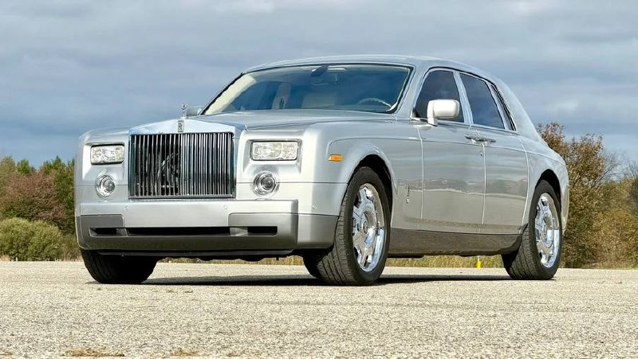
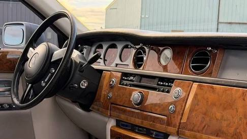

Тачки и Точка
@tachki
Тачки и Точка
@tachki
Rolls-Royce Шакила ОНила выставили на торги тот самый Phantom который баскетболист купил после провокации продавца.


Rolls-Royce Шакила О’Нила выставили на торги — тот самый Phantom, который баскетболист купил, после провокации продавца.
По словам Шака, сотрудник салона усомнился, может ли он позволить себе такую машину. В ответ баскетболист приобрёл сразу (!) три Rolls-Royce. Теперь серебристый Phantom 2004 года продают на Bring a Trailer.
Под капотом — 6,75-литровый V12 на 460 сил, в паре с шестиступенчатым автоматом. О’Нил говорил, что почти не ездил на своих Rolls-Royce, но у этого экземпляра на одометре около 72 тысяч км. Торги завершатся 3 ноября.
🚙 Тачки и Точка
По словам Шака, сотрудник салона усомнился, может ли он позволить себе такую машину. В ответ баскетболист приобрёл сразу (!) три Rolls-Royce. Теперь серебристый Phantom 2004 года продают на Bring a Trailer.
Под капотом — 6,75-литровый V12 на 460 сил, в паре с шестиступенчатым автоматом. О’Нил говорил, что почти не ездил на своих Rolls-Royce, но у этого экземпляра на одометре около 72 тысяч км. Торги завершатся 3 ноября.
🚙 Тачки и Точка